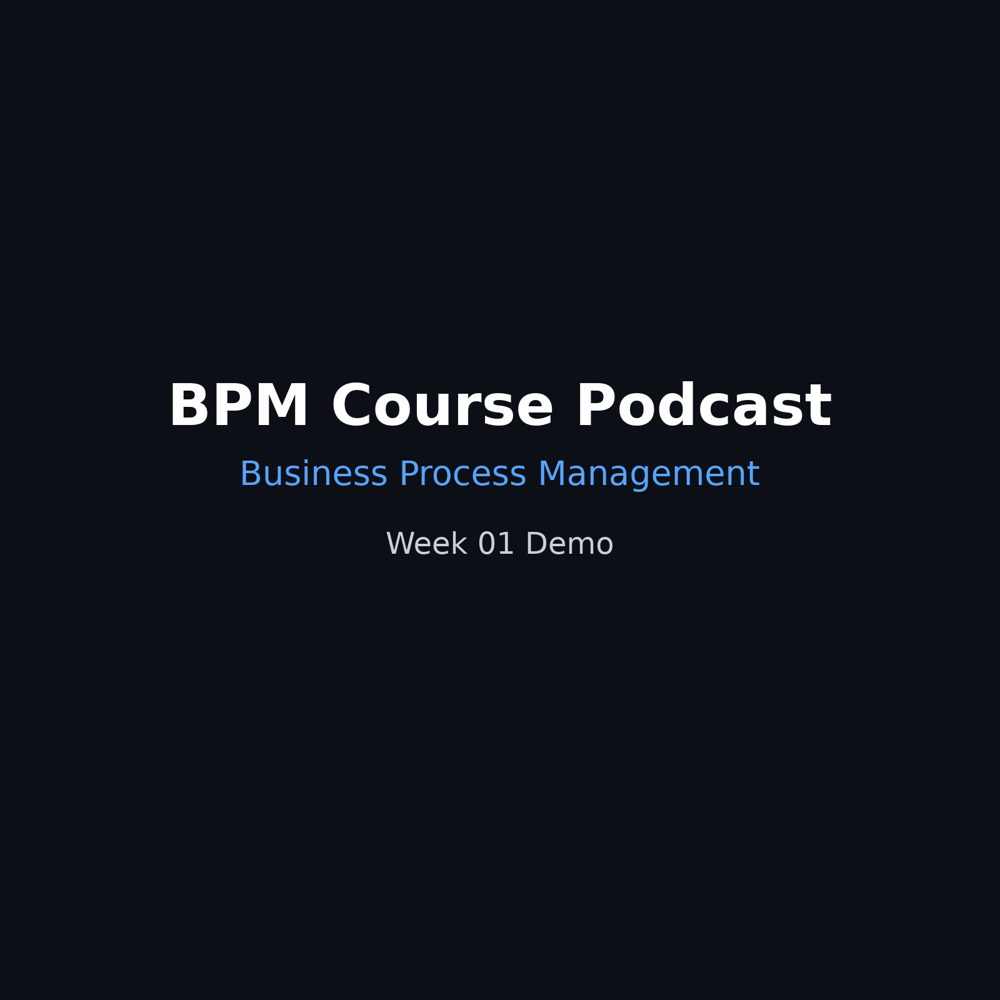

BPM 课程播客
把 Business Process Management 课程资料转成适合收听的中文播客。
V2.1 · 第 4 集：等待、记录、折叠、计时——BPMN 子流程与定时事件 (Claude Opus 4.8)来源：Week 04 — BPMN Sub-processes & Timer Events · 时长约 25:56 · 脚本：Claude CLI claude-opus-4-8 TUI 互动生成；Gemini CLI gemini-3.1-pro-preview 跨模型独立审阅 (NEEDS_FIX → GO_AFTER_FIX)；5 项修订全部应用 · 音频：100% Doubao/Volcengine seed-tts · 自然语速；zh-female-warm 单音色
完整启发式重制。客服工单系统贯穿全课，逐段攻破四堵墙：事件网关 (EBG) 等客户回复、数据对象 (DO)/数据存储 (DS) 记录信息、子流程折叠调查 SOP、边界定时事件监控 SLA 超时。全程四阶段教学——Host A 先探索试错，Host B 才给框架；段间因果桥接；五类常见混淆正面拆解。覆盖 Corleone 例子、库存检查例子、法院定时例子、数据作用域 DO1/DO2/DO3、标记组合规则 (↺∥ 不可同用)、Exercise 3 综合应用。
V3.1 · 第 3A 集：边界、桥梁与 OR 检查站——Pool, Lane, Message Flow 与 OR 网关来源：Week 03 — Resources, Messages & OR Gateway · 时长约 29:22 · 脚本：Claude CLI claude-opus-4-8 启发式教学初稿；Gemini CLI gemini-3.1-pro-preview 对比审阅 PASS WITH MINOR FIXES；Hermes 应用 2 项修订 · 音频：100% Doubao/Volcengine seed-tts · 自然语速；zh-female-warm 单音色
本集用"地图"贯穿隐喻（Pool=国家边界、Lane=省、消息流=国际桥梁、OR=检查站），覆盖 Week 03 前半：组织建模、跨组织通信和 OR 包容网关。采用完整启发式四阶段教学——Host A 在每一项关键概念（白盒/黑盒、消息 vs 数据、OR 司机互相等死锁）均先独立试探猜错，Host B 才给出框架。对比 v3.0（12分钟 Gemini版），v3.1 从模型生成、审阅到拆分渲染，全链路 Claude Opus 4.8 驱动 + Gemini 3.1 Pro 独立对比审阅。
V3.1 · 第 3B 集：流程地图质检——四层质量金字塔与习题来源：Week 03 — Quality Parts 1 & 2, Exercises · 时长约 25:26 · 脚本：Claude CLI claude-opus-4-8 启发式教学初稿；Gemini CLI gemini-3.1-pro-preview 对比审阅 PASS WITH MINOR FIXES；Hermes 应用 2 项修订 · 音频：100% Doubao/Volcengine seed-tts · 自然语速；zh-female-warm 单音色
EP03A 的下半集：从画地图变为检查地图。完整讲解四层质量金字塔（Structural/Behavioural/Semantic/Model Conventions）——Host A 亲手玩小球游戏发现死锁、推导电脑 vs 人的质检分工（Halting Problem/非正式语义）。逐题演练 5 道习题：行为正确性诊断、汽车理赔建模、大学课程语义审查、SAP 系统白盒/黑盒取舍、进阶反例构造。
V3.0 · 第 2 集：BPMN 基础与网关——用地图和弹珠学会流程建模来源：Week 02 - BPMN Basics & Gateways · 时长约 24:03 · 脚本：Claude CLI claude-opus-4-8 启发式教学初稿；Gemini CLI gemini-3.1-pro-preview 独立审阅 NEEDS_FIX → GO_AFTER_FIX；Hermes 应用 2 项修订 · 音频：100% Doubao/Volcengine seed-tts · 自然语速；zh-female-warm 单音色；无 0.9x 后处理
本集用"地图+蓝色小球"贯穿隐喻，把 BPMN 基础符号、Token Game、XOR 与 AND 网关讲透。采用完整启发式四阶段教学：Host A 主动猜测、踩坑、推理，Host B 在关键时刻纠偏（循环入口 XOR 网关防呆）。两道实战题串联：信用风险评估（XOR+AND 组合）和保险理赔循环（XOR 回路）。
V3.0 · 第 3 集：流程中的"人"与"对话"——资源、消息、OR 网关与模型质量来源：Week 03 - Resources, Messages, OR Gateway & Quality · 时长约 12:09 · 脚本：Gemini CLI gemini-3.1-pro-preview 启发式教学初稿；Gemini CLI 自审 NEEDS_FIX → GO_AFTER_FIX；Hermes 应用 3 项修订 · 音频：100% Doubao/Volcengine seed-tts · 自然语速；zh-female-warm 单音色
本集用"地图+旅行者"贯穿隐喻（Pool=国家、Message Flow=桥梁、OR=检查站），把 Week 03 的组织建模、跨组织通信、OR 网关和模型质量四层框架讲透。采用完整启发式四阶段教学：Host A 主动探索汉堡加料场景引出 OR 需求，B 纠正 OR Join 互相等待死锁陷阱。练习题互动讲解 Token Game Soundness 检查、车险理赔协作图和大学课程语义审查。
V1.1 · 第 8 集：梳理流程架构，挑对流程下手——流程识别（Process Identification）来源：Week 08 - Process Identification · 时长约 51:41 · 脚本：Claude CLI claude-opus-4-7；Gemini CLI gemini-3.1-pro-preview 独立审阅 NEEDS_FIX → GO_AFTER_FIX；Hermes Autoproducer 应用 3 项修订 · 音频：100% Volcengine / Doubao seed-tts via doubao-speech wrapper · 自然语速，zh-female-warm 单音色，无 0.9x 后处理
本集回答 BPM 生命周期中承上启下的关键问题：组织里有几百个流程，该管哪些？先管哪个？用医院分诊的类比，系统讲解 Designation（流程枚举、范围界定、三类流程架构、价值链与全景模型）和 Prioritisation（重要性/健康度/可行性三维标准、流程组合矩阵），逐题推演课后练习 1、3 和 4。
V1.1 · 第 7 集：走进随机流程模型：用概率和数学看清业务流程的"不确定性"来源：Week 07 - Stochastic Process Models · 时长约 43:26 · 脚本：Claude CLI sonnet print mode；Gemini CLI gemini-3.1-pro-preview 独立审阅 PASS_WITH_MINOR_FIXES；Hermes Autoproducer 应用修订 · 音频：100% Volcengine / Doubao seed-tts via doubao-speech wrapper · 自然语速，zh-female-warm 单音色，无 0.9x 后处理
本集把静态的 BPMN 流程图升级为"能算账"的随机流程模型（Stochastic Process Models）。为什么确定性模型答不出"平均多久、瓶颈在哪、成本多少"？我们系统讲解三种网关概率规则（XOR 分支和为一、OR 单条不必、事件网关先到先得）、负指数时间分布 E(λ) 的 CDF 公式和经典速率陷阱（λ 是倒数不是平均），以及轨迹概率"沿路相乘/合并相加"的通用解题法则。最后逐题推演课堂练习一到六，从贷款拒绝到俱乐部订阅的超指数接力，把公式变成可用直觉。
V1.1 · 第 6 集：行为正确性与 BPMN 信号：模型质量、令牌游戏与广播事件来源：Week 06 - BPMN Model Correctness & Signals · 时长约 41:10 · 脚本：Claude CLI Sonnet print mode；Gemini CLI gemini-3-flash-preview 独立审阅 PASS_WITH_FIXES；Claude CLI Sonnet final fixes · 音频：Volcengine / Doubao seed-tts via doubao-speech wrapper · 自然语速，无 0.9x 后处理
本集带你深入攻克 BPMN 模型质量中的核心考点——行为正确性（Behavioural Correctness）与信号事件（Signal Events）。我们不仅会讨论静态的符号语法，还会用生动的“令牌游戏 (Token Game)”把流程模型变活，透彻剖析死锁与缺少同步的本质区别。还会对比“信号”与“消息”在 BPMN 通信语义中的关键差异（广播式 vs 定向式），并结合 Week 06 的典型练习进行场景演练。
V1.0 · 第 5 集：出意外、要撤销、要善后——BPMN 高级事件与补偿来源：Week 05 - BPMN Advanced Events & Compensation · 时长约 47:24 · 脚本：Claude CLI draft artifact；Gemini CLI gemini-2.5-pro 独立审阅 PASS_WITH_FIXES；Hermes cron deterministic cleanup · 音频：混合 Doubao / Volcengine 已缓存片段 + Doubao quota 后 Gemini 2.5 Flash preview TTS fallback · 自然语速，无 0.9x 后处理
本集把第五周的 BPMN 高级事件串成一个问题：流程已经跑到一半，突然失败、取消、超时，或者需要把已经完成的事情撤销回来，模型应该怎么画？用电商订单和舞台剧类比，讲清 Terminate End Event、Event Sub-Process、Text Annotation、Boundary Event、Error Event、Compensation，以及 Week 05 练习和 selected answers 5.2 / 5.3 的建模检查点。
V1.1 · 第 4 集：等待、记录、折叠、计时——BPMN 子流程与定时事件来源：Week 04 - BPMN Sub-processes & Timer Events · 时长约 26:19 · 脚本：Claude CLI claude-sonnet-4-6；Gemini CLI gemini-3.1-pro-preview 交叉审阅尝试超时未产出结构化结论 · 音频：Doubao / Volcengine TTS (zh-female-warm；当前资源仅授权该 speaker) · 自然语速，无 0.9x 后处理
本集用“客服工单系统”这个稳定类比，把第四周的四类 BPMN 工具串起来：事件网关等待外部事件先发生，数据对象和数据存储记录流程信息，子流程把复杂流程折叠成层级结构，定时事件表达周期启动、流程中等待和 SLA 超时升级。覆盖 Event-Based Gateway、Data Object、Data Store、Sub-process、Call Activity、Event Sub-process、Loop / Multi-instance / Ad-hoc Sub-process、Timer Start / Intermediate / Boundary Event 等核心术语。
V1.2 · 第 3 集：流程中的“人”与“对话”：资源、消息、OR 网关与模型质量来源：Week 03 - Resources, Messages, OR Gateway, Quality 1 & 2 · 时长约 12:58 · 脚本：Gemini CLI gemini-3.1-pro-preview · 音频：Doubao / Volcengine TTS (zh-female-warm；当前资源仅授权该 speaker) · 自然语速，无 0.9x 后处理
这一版根据试听反馈重写为更适合收听的课程音频：不为了缩短时长而压缩解释，而是用更短句、更清晰的术语引入、晓雨的复述和追问，讲清 Resource、Pool、Lane、Collaboration Diagram、Message Flow、OR Gateway 与模型质量四维框架。练习部分重点推演前三道代表题，第 4、5 题作为课后挑战。
V1.0 · 第 2 集：BPMN 语言课：如何用“弹珠游戏”看懂业务流程图？来源：Week 02 - BPMN Basics & Gateways · 时长约 13:44 · Gemini 2.5 Flash Preview TTS (Kore & Puck) · 高清自然语速版
本集带你零基础攻克业务流程建模普通话 BPMN 2.0。通过生动活泼的“令牌游戏”把静态流程图变活，透彻掌握 XOR 与 AND 网关的分流汇合精髓（互斥、完备与同步机制），并面对面带你画出信用风险评估与保险理赔循环两道大题！
V1.2 · 第 1 集：从混乱到秩序：什么是 BPM，我们为什么需要它？来源：Week 01 - Introduction to BPM · 时长约 14:17 · Gemini 双人 TTS · 0.9x 语速试听版
这一集围绕第一周课件，讲清楚业务流程、职能孤岛、隐藏流程、流程目标、Ford 应付账款案例、BPM 生命周期、参与角色与相关学科。
← 返回 Podcast Hub